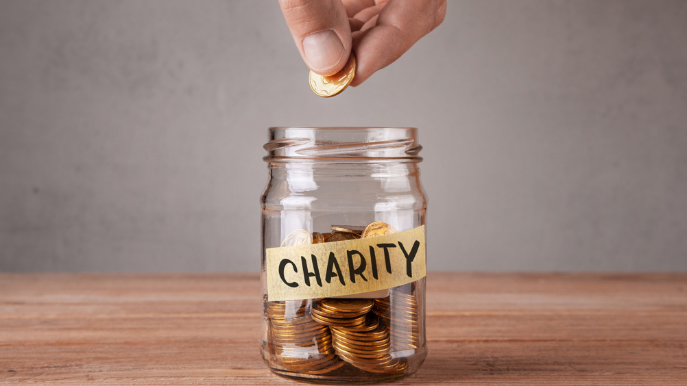
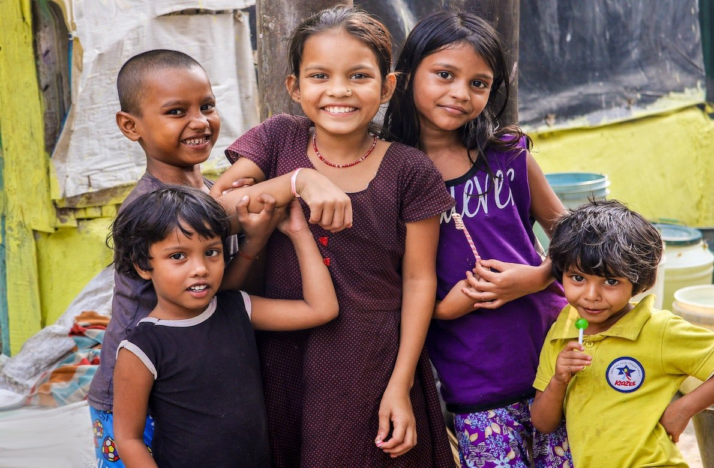
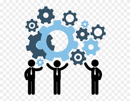

I understand that focusing on individual contributions can sometimes feel isolating, but it's important to recognize the value of what we can achieve on our own. As a dedicated solo developer, I genuinely care about supporting others through my passion for programming. It brings me joy and fulfillment to know that my skills can make a difference.
Even though I am still learning in the realm of website development, I have a heartfelt vision of creating a charitable organization that offers essential resources and support to those who need it most. I know how challenging it can be to navigate life's difficulties, and I want to be there for others during tough times.
Additionally, my aspiration to work as a financial adviser reflects my desire to empower individuals with valuable knowledge and strategies that can help them achieve financial stability. I believe that by pursuing these goals, I can not only grow my technical abilities but also foster meaningful connections and positive changes in the lives of the individuals and communities I serve. Together, we can create a supportive environment that uplifts everyone involved.

Our Mission
Our mission is to make a real and lasting difference in our communities by building user-friendly and engaging websites. These websites will not only help people effectively but also use creative advertising strategies to help generate income. As we grow, we want to partner with people and businesses that share our vision. By working together, we can increase our revenue and find new ways to extend our reach and effectiveness.
Our ultimate goal is to dedicate a significant portion of our earnings to charitable causes, particularly those that support individuals who are underserved or in urgent need. We are committed to being open and honest about our work, and we will share detailed reports showing how we contribute to these causes, so you can trust that we are doing what we say.
As I embark on this journey to create and improve these websites, I will be keeping track of my experiences. I will focus on making the designs appealing and the user experience enjoyable, so they are accessible to everyone. By sharing my progress and the lessons I learn along the way, I hope to inspire you and others to join us in our mission.
Together, we can make a meaningful impact by supporting important causes and helping those who need it most. Join us on this journey to create positive change and work together to make our communities better for everyone.

Our Values
At the core of the organization is a framework of values that guide daily operations and shape interactions with stakeholders. These principles lend structure to the mission, transforming it into a commitment reflected in various aspects of organizational work.
Compassion – There is a recognition of the diverse challenges individuals encounter, including those related to health, education, and economic stability. The focus is on developing targeted solutions that aim to uplift and empower individuals through support systems tailored to their unique circumstances and aspirations.
Integrity – Honesty and transparency are regarded as fundamental aspects of operations. The organization is dedicated to maintaining openness in all facets of its work, including financial dealings and the outcomes of initiatives. Regular reports and updates are shared to keep stakeholders—such as donors, partners, and communities—well-informed and to enhance trust in the impact of efforts.
Collaboration – The organization actively seeks partnerships with individuals, businesses, and community organizations that align with its vision. By fostering these collaborative relationships, a diverse range of perspectives and resources is utilized, allowing for more effective responses to challenges and the achievement of goals that would be difficult to attain independently.
Innovation – A commitment to embracing creativity and technological advancements is evident in the development of websites and tools designed to efficiently meet objectives while ensuring engagement and inclusivity for all users. Solutions are created with accessibility in mind, allowing individuals from various backgrounds and abilities to benefit from the provided services and resources.
Impact – Each initiative undertaken is aimed at fostering positive change within the lives of individuals and the broader communities served. Impact is measured through both qualitative and quantitative methods, facilitating continuous refinement and enhancement of programs to ensure they yield meaningful and lasting benefits.
By adhering to these values, the organization emphasizes the importance of creating greater outcomes for communities and establishing pathways for hope, growth, and connection.
How it works
At Project ProperGive, we firmly believe that even the smallest actions can lead to significant positive changes in our communities and the world at large. Here’s how we simplify the process for you to actively contribute and make a meaningful difference:
Discover Opportunities – Dive into our diverse range of projects and initiatives that we actively support. From local community development programs that empower underprivileged families to innovative environmental initiatives aimed at preserving our planet, each project is meticulously chosen based on its potential to maximize positive impact. Explore our initiatives to find a cause that resonates with your values.
Get Involved – Your participation can take many forms, and we make it easy for you to choose the way that suits you best. Whether you prefer making a one-time donation to help fund a specific project, committing to regular support to ensure ongoing actions can take place, or volunteering your time and skills for hands-on involvement, know that every action—no matter how small—counts incredibly and contributes to our collective mission.
Track the Impact – We prioritize transparency because we believe that you deserve to see the results of your generosity. Through regular updates, detailed reports, and inspiring stories from beneficiaries, we demonstrate exactly how your contributions are creating real change in the lives of those we aim to support. Stay connected with the progress being made thanks to your involvement.
Share & Inspire – Help us widen our impact by encouraging your friends, family, and social networks to join our mission. Every time you share our initiatives on social media or talk about us within your community, you help us reach more individuals who might be interested in contributing in their own way. Together, we can amplify our efforts and support even more people in need.
Our mission is straightforward yet profound: to connect kind-hearted individuals with meaningful causes that resonate deeply, making the act of giving accessible, transparent, and fulfilling. With your support, we can drive forward positive transformation—one small step at a time.

Blog & Updates
Stay in the loop with Project ProperGive! Here we share:
Latest Projects: Still on development
Stories from the Field: Still on development
Tips & Insights: Still on development
Our blog is your window into the heart of Project ProperGive. Check back often to see how your support is changing lives, and get inspired to join the movement!
Contact Us
We’d love to hear from you! Whether you have questions, suggestions, or just want to say hello, there are several ways to reach us: